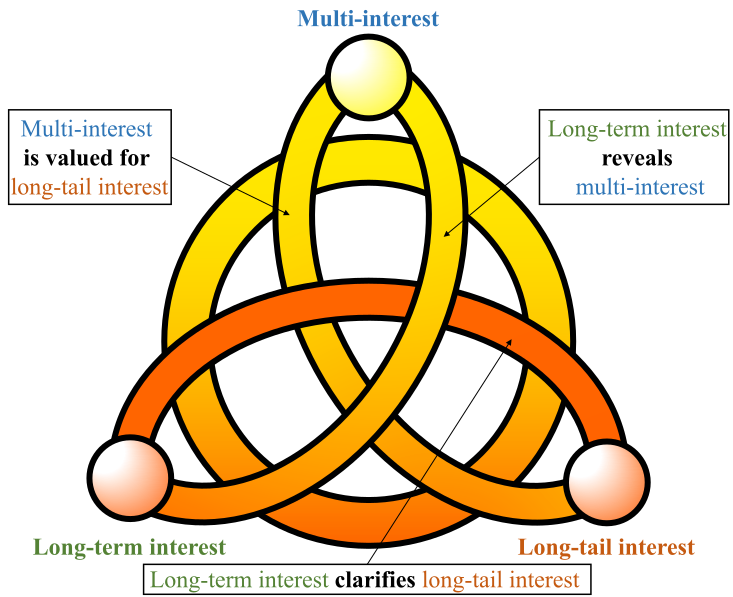
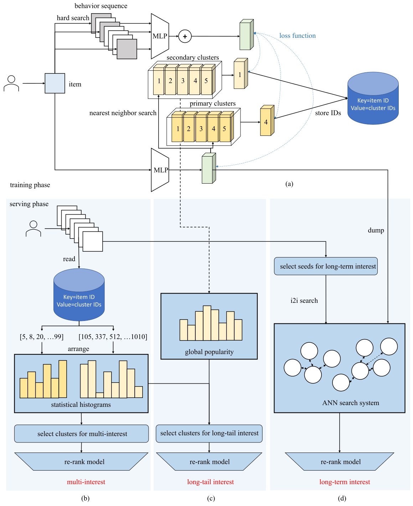
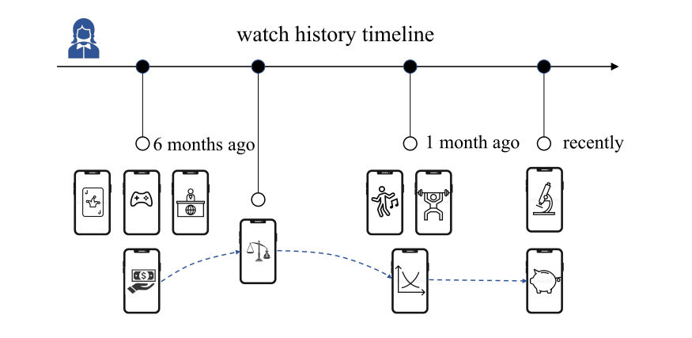
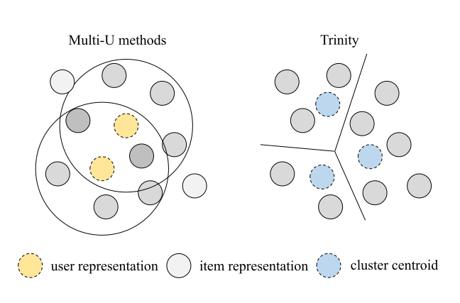
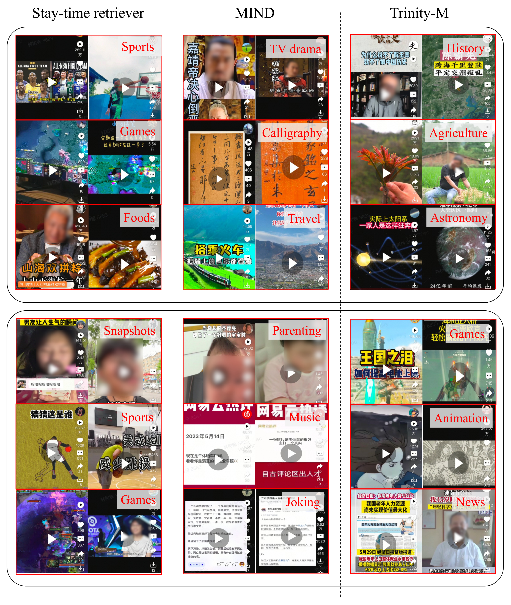

Trinity：将多兴趣/长尾兴趣/长期兴趣融于一体
摘要
推荐系统中的兴趣建模一直是提升用户体验的永恒话题，而典型的兴趣建模任务（例如多兴趣、长尾兴趣和长期兴趣）已在许多现有工作中得到研究。 然而，其中大多数工作只是孤立地考虑单一兴趣，而忽视了它们之间的相互关系。 在本文中，我们认为这些任务都面临一个共同的“兴趣遗忘”问题，并且存在一种能够同时缓解该问题的解决方案。我们发现长期线索可以作为基石，因为它们能够揭示多兴趣并厘清长尾兴趣。受此观察启发，我们在检索阶段提出了一个新颖且统一的框架“Trinity”，以 解决兴趣遗忘问题并改进多个兴趣建模任务。我们构建了一个实时聚类系统，使我们能够将物品投影到可枚举的簇中，并在这些簇上计算统计兴趣直方图。 基于这些直方图，Trinity 能够识别出投放不足的主题，并且在面对新兴热点话题时保持稳定。由于计算开销适中，Trinity 更适合大规模工业场景。 其衍生的检索器已部署于抖音的推荐系统，显著提升了用户体验和留存率。 我们相信，这些实践经验可以很好地推广到其他场景。
1. 引言



大规模工业推荐系统（RS）每天面临海量请求，并应捕获每个用户的兴趣。 随着日活跃用户（DAU）及其在平台上花费时间的增长，兴趣建模变得越来越具有挑战性和多样化。 新出现的问题可归类为：(1) 多兴趣，即用户可能对许多主题和话题感兴趣（在抖音中，根据我们提出的聚类系统，大多数用户拥有超过个感兴趣话题）。 (2) 长尾兴趣，指仅吸引小众受众的不热门主题。 (3) 长期兴趣，主要描述用户愿意持续观看的主题，而非近期热点话题或新兴趋势。 例如，在图3中，一位用户大约六个月前观看了许多游戏和脱口秀视频。在上个月，她沉迷于舞蹈和健身主题。如今她观看一些研究进展，同时她多年来一直关注经济新闻。这里提到的所有话题都可定义为多兴趣。游戏/脱口秀/舞蹈/健身是长期兴趣主题，它们可能偶尔被我们的系统“遗忘”，但如果被投放仍然会吸引她。研究进展是一个典型的长尾主题，几乎无法吸引所有人，但可以被相当多的用户所欣赏（这也是我们同样关注长尾兴趣的原因）。在这种情况下，研究进展有机会成为多兴趣。
本文的核心思想在于，我们认为多兴趣/长尾兴趣/长期兴趣是相互依赖、相互强化的。因此，我们旨在同时改进这些兴趣建模任务。 如图1所示，我们有一些富有洞察力的观察。首先，用户近期的行为序列很容易被若干热点话题所主导，因此我们需要长期线索来识别多兴趣中的其余话题。其次，在完整的工业系统中，热门主题已被充分投放，我们所考虑的多兴趣本质上指的是全局长尾主题。 例如，在抖音中大多数用户接受新闻和快照，而我们必须匹配书法及其受众。 最后，长尾兴趣也依赖于长期线索，因为一个人是否真正对某个话题感兴趣只能通过长期观察来确认。 受这些观察启发，我们考虑同时改进多个兴趣建模任务。
然而，对这些兴趣建模至关重要却相当困难：在当前系统中，我们采用在线学习模型对候选进行排序，这些模型以流式范式训练，自然倾向于新到来的样本。 因此，由于相应训练样本的偶尔缺失，它们可能“遗忘”某些感兴趣的主题，导致“兴趣遗忘”问题，并使投放效果恶化。现有方法专注于修改在线学习框架，并引入额外的预测头和记录用户过往行为的特征。然而，此类方法付出了过多的计算开销，且它们只考虑兴趣建模任务之一而忽视了它们之间的相互关系。
在本文中， 我们发现兴趣遗忘问题本质上是由在线学习框架本身造成的，修改它可能收效甚微。相反，我们提出了一个基于统计的框架“Trinity”。Trinity 首先理解长期线索，并将用户兴趣汇总为统计直方图，据此我们可以轻松区分多兴趣/长尾兴趣/长期兴趣主题。然后， 通过定制化策略选出投放不足的主题以提升用户体验。由于 Trinity 基于长期统计信息建模，它在表示多种兴趣方面坚不可摧，同时能够抵御兴趣遗忘问题。 Trinity 由三个独立的检索器组成：用于多兴趣的 Trinity-M、用于长尾兴趣的 Trinity-LT 和用于长期兴趣的 Trinity-L，如第4节所示。 据我们所知，Trinity 是首个将多种兴趣建模融合进统一框架的工作，并创新性地将长序列线索（长度）引入检索阶段。
与专注于单一兴趣建模任务的现有方法相比，Trinity 具有一些显著优势：(1) 基于统计直方图，每个感兴趣的簇都得到清晰评估，不会被遗忘或忽视。(2) 由于物品被独占性地分配到索引，计算开销随感兴趣主题的增长呈线性增加，优于现有方法。(3) 基于其聚类系统，整个投放流程更具可解释性和可管理性。我们可以制定更先进的策略以达到更好的用户体验。 Trinity 极大地惠及工业推荐系统，我们已在抖音和抖音极速版上线了上述检索器。
总之，本文的贡献如下：
-
(1)
我们揭示了多兴趣/长尾兴趣/长期兴趣之间的关系，并展示了它们之间的相互关系。
-
(2)
我们提出了新颖且统一的 Trinity 框架，它同时改进多个兴趣建模任务。
-
(3)
我们展示了 Trinity 以可承受的计算开销实现的详细方案，推动了大规模工业推荐系统的发展。
2. 相关工作
在本节中，我们将现有工作归纳为多兴趣、长尾兴趣和长期兴趣领域，并讨论我们的工作与它们的不同之处。
近期，考虑多兴趣建模的流行方法之一是 MIND(Li et al., 2019)。它提出多个用户表示（本文中也称为“头”）以从多个领域中检索候选，并已成为工业应用中的主流方法。ComiRec(Cen et al., 2020)进一步考虑多样性以提升系统性能。MVKE(Xu et al., 2022)使用称为“虚拟核”的子专家网络来捕获用户在各种任务和话题上的偏好，并将它们组合以输出综合结果。一些工作从不同角度考虑用户兴趣，例如 Jiang(Jiang et al., 2020)等人探讨了多尺度时间效应对用户兴趣的影响。(Tan et al., 2021a, b)将类似思想引入序列推荐场景。Xie 等人(Xie et al., 2023)改进了负采样和路由算法以解决多兴趣学习中的训练问题。由于这些方法训练多个用户表示以覆盖各种用户偏好，我们将它们归纳为“Multi-U”类方法。上述所有方法都专注于修改现有的在线学习框架，而我们提出的工作依赖于长期统计信息。
长尾物品缺乏用户反馈或协同数据，因此有许多方法专注于多模态或图方法(Yin et al., 2012; Johnson and Ng, 2017; Luke et al., 2018)以改进表示和预测。 Huang 和 Wu(Huang and Wu, 2019)在主题模型中提取产品画像和相似产品。 而 Kumar 等人(Singla et al., 2020)则改用少样本学习实现长尾推荐。 请注意，本文并非精确聚焦于长尾物品。长尾兴趣主要指小众话题，但其物品未必晦涩难懂。
3. Trinity 基础框架
在本节中，我们首先阐述 Trinity 的核心思想，并介绍其基础训练框架。使用 Trinity 框架改进多兴趣/长尾兴趣/长期兴趣的细节安排在第4节。
如图1所示，我们同时考虑多种兴趣。与现有工作不同，我们认为兴趣建模并非孤立的任务，相反，这些兴趣相互依赖、相互强化。 因此，统筹考虑全局对系统大有裨益。 我们有以下三个视角：
1) 长期兴趣揭示多兴趣。用户的短期兴趣可能被新兴趋势和不可预测的热点话题所主导，导致其行为序列中的物品同质化。通过引入更长的行为序列，我们可以找出哪些话题构成多兴趣 并获得更全面的用户偏好。
2) 多兴趣因长尾兴趣而有价值。 多兴趣提供了广泛的内容主题集合，其中热点话题和小众主题都能被捕获。 然而，在完整的推荐系统中，热点话题（如新闻、游戏）的物品已被现有检索和排序阶段充分评估和投放。当我们思考多兴趣时，我们实际上关注的是某些不常见的主题，如科学和诗歌。
3) 长期兴趣厘清长尾兴趣。长尾主题只吸引小众受众，而许多播放只是出于随意兴趣。要找出持续消费这些主题的真正受众，我们需要回溯长期行为记录。
目前，各兴趣之间的相互关系是连贯的，并启发我们同时对其建模。但在在线学习框架中实现它仍然困难。现有工作一直在努力解决兴趣遗忘问题。然而， 在线学习模型被迫拟合当前样本，因此它们不可避免地倾向于新到来的样本和热门物品（占据大多数曝光）。如果某些话题的样本变得稀少，相应的兴趣将被逐渐遗忘。我们将这一现象总结为“兴趣遗忘问题”，在在线学习框架中缓解它需要大量人力。
本文不修改在线学习框架，而是尝试采用另一种工具：统计。基于长期行为提取的统计线索能够清晰地揭示每一个感兴趣的主题，并且在新兴趋势出现时保持稳定。因此，它有效缓解了兴趣遗忘问题，并能区分多兴趣、长尾兴趣与长期兴趣。具体而言，我们构建了一个兴趣聚类系统。随后，用户的历史行为被投影到该系统中，得到长期行为直方图。最后，我们可以基于直方图实施定制化的投放策略。只要我们检索长期行为，长期兴趣建模就得到改善，并且我们按如下方式改善其他方面：
(1) 按行为计数对直方图降序排序，选取前 k 个聚类并对其进行分散，确保中间聚类的物品不被头部聚类所支配。这提供了全面的结果并改善了多兴趣。
(2) 对于每个全局长尾聚类，如果当前用户频繁消费该主题的物品，我们就增强其投放。这将小众主题与其受众匹配起来，从而改善长尾兴趣。
考虑到实现，我们需要以下工具：一个可由嵌入构建、并能够均匀地度量长期行为与近期行为的聚类系统；一个可将行为映射到聚类、从而实时形成用户直方图的存储系统；以及一系列投放策略。
在图2(a)中，我们展示了 Trinity 的基本框架。训练阶段主要由一个 SIM（基于搜索的兴趣模型 (Pi et al., 2020)）头和一个 VQ-VAE (van den Oord et al., 2017) 结构组成。对于每个物品，我们首先搜索其 SIM 序列，并提取两者的嵌入（记为绿色立方块），分别记为 和 ，对应于 。行为序列嵌入经均值池化形成用户侧表示 。同时，我们准备一级和二级可学习聚类 、，其中 属于 ， 属于 （记为黄色立方块），并分配它们的嵌入 和 。 和 分别设为 128 和 1024。我们搜索当前物品的前 1 个最近邻聚类（例如 ID=4 和 1，见图2），记为 和 ，并对 (, )、(, ) 和 (, ) 对应用二元交叉熵（BCE）损失函数：
| (1) |
其中下标 表示一个批次中的样本索引。这里， 的条件是用户看完该视频、与其交互（点赞/分享/关注/评论），或观看时长超过 10 秒。此外，我们加入一些随机负样本以获得更具判别性的嵌入。注意，物品与聚类之间的分配关系在实时训练过程中通过最近邻搜索确定，我们将该信息写入键值存储（键=物品 ID，值=[一级聚类 ID，二级聚类 ID]）。我们的实现遵循 VQ-VAE 中的相同设计：聚类的梯度直接施加在物品上，而聚类嵌入则由其所属物品嵌入的移动平均来更新。这里我们使用两级的层次聚类系统。细粒度的二级层次旨在筛选物品，而粗粒度的一级层次避免重复主题并起到分散作用（详见第4.1节的示例）。
由于物品嵌入由 SIM 头训练，而 SIM 头涉及跨度很广时间范围内的行为记录，近期物品和非常“陈旧”的物品被同时优化并均匀地度量。这为我们提供了一个基于协同的、随时间变化的且时间无偏的聚类系统（这是多模态特征无法实现的）。更重要的是，无限多的物品被离散化为可枚举的聚类集合，这使得聚类级别的统计成为可能。
4. 大规模推荐系统中的兴趣建模
在上一节中，我们展示了训练过程。在本节中，我们介绍具体且实用的策略，以分别解决兴趣遗忘问题并改善多兴趣、长尾兴趣和长期兴趣建模。注意，本文只关注检索阶段。原因有两方面：一方面，检索器为排序模型确定候选。如果我们在这一阶段丢失了感兴趣的主题，排序模型也无能为力去改善兴趣建模。另一方面，检索器始终采用近似最近邻（ANN）搜索系统以提高计算效率。在排序模型对每个候选进行穷举评估的精确计算场景中，我们可以通过分散来提升某些主题，从而“记住”它们。然而，我们几乎无法采用同样的思路，因为近似计算在一开始就丢弃了一些候选。
4.1. 多兴趣
改善多兴趣建模的关键思路是：在用户的统计直方图中选取强度中等但显著的聚类，这些聚类已被用户消费过，但容易被模型遗忘。给定每个聚类上的行为计数，投放充分、投放不足以及不感兴趣的主题便清晰可见。
如图2(b)所示，在服务阶段，对于每个请求，我们首先提取用户的长期行为序列（长度=2500）。注意，该序列仅存储满足 或已被看完或交互（点赞/关注/分享/评论）的物品 ID。然后，实时从第3节所述的键值存储中读取相应的聚类 ID，并将其组织为一级和二级直方图 和 ，其中每个条形对应第 / 个聚类的行为计数。
通过简单地按降序对直方图排序，用户的兴趣分布便清晰可见。例如，若排序后的直方图为 ，对应索引为 ，则 ID=10 的聚类是用户的主要兴趣（我们将拥有最强响应的聚类定义为“主要兴趣”）。然而，在索引=33 和 100 处也存在显著响应，这构成了本文关注的“多兴趣”（主要兴趣也是多兴趣的一部分，但它们通常已被现有检索器充分投放）。91 和 62 的聚类被视为探索性兴趣，它们可能成为用户的多兴趣或全局长尾兴趣。其他聚类则被忽略。
受这一观察启发，我们引入一种基于策略的检索器来改善多兴趣建模。首先，我们读取用户过去行为的聚类 ID：，其中 。在每一对中，二级聚类 ID 作为一级聚类的子节点附加。由此得到形如 的结构化数据，其中“”表示一对多映射关系。注意，在训练阶段，物品各自搜索其最近的聚类，因此一级聚类和二级聚类仅在统计上相关。不同一级聚类下可能存在相同的二级聚类，因此我们在 中需要双重下标。在后续步骤中，一级聚类用作分散方法，我们仅利用二级聚类来投放物品。
首先，我们选取满足 大于 且其每个二级聚类满足 大于 的一级聚类。然后，为每个一级聚类随机选择一个二级聚类。如果聚类数量不足，我们从上述一级聚类中选取 最大的二级聚类。如果聚类数量仍不足，我们按从大到小的顺序逐个收集二级聚类。在上述每一步中，我们都去除重复的聚类。该算法总结于算法1，它通过添加一个重排模型来评估所选聚类的候选，从而形成额外的检索器，命名为“Trinity-M”。
某些中间聚类可能会被主要感兴趣的主题所支配，因为存在模型偏差（模型认为聚类 A 的大多数物品优于聚类 B 的物品），所以在单一的双塔检索器中，它们无法获得足够的曝光。然而，在 Trinity-M 中，我们在每个一级聚类中只选择一个二级聚类。这起到了类似分散的作用，我们可以收集到互补的聚类集合，它们不会被遗忘。通过“唤醒”这些主题，用户找回了部分兴趣，并对我们的系统感到更满意。在第5.3节中，我们展示了 Trinity-M 的互补性和全面性，这带来了显著改善的用户体验以及更多样化的系统。注意，我们在 Trinity 框架中通过将行为投影到聚类来引入长序列线索，同时避免在在线学习模型中直接使用长序列线索（检索器必须管理数十亿候选，我们几乎无法像排序模型那样使用 SIM (Pi et al., 2020)）。据我们所知，Trinity 是首个在检索阶段成功利用长序列线索（）的工作。
| Aspect | Multi-U | Trinity-M |
|---|---|---|
| Flexibility | ⊗ | ✓⃝ |
| Efficiency | deteriorates with | consistently keeps |
| many heads | linear increasing | |
| Explainability | semantically | semantically |
| ambiguous | meaningful | |
| Extensibility | has not | has been achieved |
| been validated | in this paper | |
| Fungibility | feasible | only complementary |
我们在表1中比较 Trinity-M 与“Multi-U”类方法的优缺点。这里我们用“Multi-U”来概括大多数现有工作，它们训练多个用户表示（头）并搜索多个候选结果以捕捉多兴趣。最著名的 Multi-U 方法有 MIND (Li et al., 2019)、ComiRec (Cen et al., 2020) 和 MVKE (Xu et al., 2022)。
-
(1)
灵活性。它衡量我们能否灵活地调整感兴趣的主题。在 Trinity-M 中，策略是定制化的，因此扩展所考虑的主题、跳过头部聚类以及实施主题采样都会很容易。然而，Multi-U 方法若不训练新模型，就无法提供轻松的解决方案。
-
(2)
效率。效率描述随着考虑的主题增多，服务成本如何增加。对于 Multi-U 方法，当我们引入一个额外的头时，就要多执行一次 u2i 搜索。然而，如图4所示，物品可能会被多个头冗余搜索。因此，我们拥有的头越多，通过增加头所能检索到的唯一候选就越少。相反，在 Trinity-M 中，物品被确定性地且排他地分配到聚类。当我们增加额外的聚类时，它们只会带来补充性候选。找到更多感兴趣的聚类的开销始终是线性的额外开销。
-
(3)
可解释性。可解释性描述特定头/聚类的语义含义。在 Multi-U 方法中，各个头被约束去学习不同的样本，然而我们几乎无法控制训练过程或指定要优化的特定主题。在 Trinity-M 中，聚类本身具有语义含义（见第5.1节），我们知道我们正在考虑哪些主题。
-
(4)
可扩展性。可扩展性衡量该方法能否扩展到其他场景。Multi-U 方法很少为长尾或长期兴趣建模任务提供解决方案。而 Trinity 同时改善这些兴趣建模问题，如下文所示。
-
(5)
可替代性。可替代性指我们能否用所提出的方法替代现有检索器。在这方面，Multi-U 方法可以作为替代方案，因为它们的多个头容易覆盖单个 u2i 模型的候选。然而，由于 Trinity 基于长期统计建模，新兴物品/主题难以在时间上凸显。因此，我们将 Trinity-M 用作额外的检索器，只考虑其补充功能。

4.2. 长尾兴趣
对于长尾兴趣，我们的思路是基于聚类将个人兴趣分布与全局兴趣分布进行比较。首先，我们需要自动识别/定义全局长尾聚类。然后，我们检查用户的统计直方图在这些聚类上是否存在显著响应。满足这一标准的聚类被收集起来，形成额外的检索器。
受(Yi et al., 2019)启发，我们采用类似的流式频率估计，但将其应用于聚类而非物品。具体而言，聚类 （对于长尾兴趣，我们只考虑二级聚类）由哈希函数 映射，当它出现在训练流中时，其出现间隔由下式计算
| (2) |
其中 记录该簇最后一次出现的时间戳。 表示最近一次出现的间隔， 是其全局滑动平均。这在图2(c) 中进行了说明。
一般来说，我们可以从出现间隔较大的簇中识别出全局长尾主题。然而，出现间隔大的簇并非只由长尾主题构成。还存在一些“并列”簇，它们代表热门话题，但由于训练偶然性而只包含少量条目。我们移除条目数少于 的簇，从而有效避免并列簇。在我们的实现中，我们按出现间隔排序，将前 600 个簇（覆盖约 22% 次曝光）定义为长尾簇，且其中不含并列簇。
在定义长尾簇之后，我们检查用户的统计直方图。如果一个簇的行为计数超过 ，则被视为对长尾兴趣的“确信”响应，并予以纳入。 我们引入一个采样器来选择 个簇，其中每个簇被采样的概率为
| (3) |
。超参数 调整该分布（例如， 形成均匀分布），我们使用 作为平滑项。在我们的实现中，我们设置 和 。所设计的采样器在用户体验和多样性方面均优于均匀随机采样器，因为属于头部簇的条目更可能被消费（见第5.2节）。 注意，与 Trinity-M 重复的簇已在第一步中被移除。
上述算法总结在算法2中。在收集到 次级簇之后，我们将其中的条目输入重排序模型以获得检索结果。该检索器记为 Trinity-LT。
4.3. 长期兴趣
如第3节所述，SIM 头同时优化用户过去较长时间的行为条目和当前条目。因此我们认为生成的条目嵌入表示长期线索，并构建一个 i2i 检索器来捕获用户的长期兴趣。
如图2(d) 所示，我们训练一个预排序模型，从用户过去的行为序列中选择种子。为捕获全面的兴趣，任何 、完播或互动（点赞/分享/评论/关注）反馈都被视为正标签。该模型遵循常规的双塔架构，并引入随机负样本。
在对用户的行为条目（长度为 2500）进行排序后，我们将它们投射到 Trinity 聚类系统中，并通过限制同一簇的候选不超过 来进行分散。然后我们随机选择 个种子，其范围为排名前 的条目，并以 Trinity 嵌入度量的相似度搜索条目。与 Trinity-M 和 Trinity-LT 类似，搜索到的条目被输入重排序模型，形成 Trinity-L 检索器。注意长期线索已被 Trinity-M 和 Trinity-LT 利用，我们引入 Trinity-L 作为轻量化的补充扩展。
4.4. 实现细节
所提出的三个检索器选择簇并聚合其所属条目，同时保留 10K-100K 个候选，这对于后续排序阶段仍然过大。因此我们采用重排序模型将候选缩减至约 1000 个。重排序模型遵循双塔架构，但在服务阶段不借助 ANN 即可精确预测排名。
重排序模型的目标是预测视频播放时长。具体而言，观看时长在 2 秒以内的样本为负样本。对于其余正样本，我们使用其播放时长（截断为至多 5 分钟）来对批内 Softmax 损失 (Yi et al., 2019) 加权。事实上，这样的模型已被部署为主要检索器，称为“停留时长检索器”，我们只是将其复用为其他检索器的重排序模型。
5. 实验
在本节中，我们展示 Trinity 的性能。首先，我们展示对其聚类系统的可视化分析，验证所提出模型的一些有趣性质。 然后，我们展示额外检索器在我们大规模工业场景中的在线性能。 我们还对它们进行详细分析，以弄清它们如何改进兴趣建模任务以及用户体验。
5.1. Trinity 的聚类系统
在图5中，我们可视化了属于 Trinity 簇的一些条目。同一行的条目共享相同的次级簇 ID，我们用（簇 ID，条目 ID）来指代它们。 Trinity 聚类系统与从人类视角出发的直观聚类系统（记为标签系统）之间最重要的区别在于其聚类方式。 例如，在第一行中，所有条目都与亲子关系有关，而非育儿，这在人类视角下并不常见。这些条目来自新闻、法律等多个标签，甚至最后一个例子（A,c）讲的是实际上并不发生的假想亲子关系。类似的现象可以在 B 的簇中观察到，其中条目都与英俊男性有关，无论其是真人还是动画模型。一个簇的主题聚焦于一个非常规话题，并覆盖多个标签方面。
第三行展示了一个更为常见的分类学示例，其中三个条目都与教育有关，且每个条目解释一个子主题（职业、经济学和育儿）的知识。 最令人惊讶的例子来自最后一行。这些条目展示了三个地方的景点和食物，而这些地方位于同一个省。 因此我们可以得出 Trinity 聚类的另一个性质：其分类学随一般主题而变化。在教育主题下，它按学科对条目分类，而在旅游主题下，它将条目划分为地理分箱。
5.2. 在线实验
| Douyin | Douyin Lite | |||||||
| Retrievers | Watch Time | AAD | AAH | AT | Watch Time | AAD | AAH | AT |
| MIND (Li et al., 2019) (6 heads*) | +0.093% | +0.009% | +0.033% | -0.472% | +0.176% | - | +0.051% | -0.270% |
| Trinity-M | +0.118% | +0.008% | +0.046% | +0.153% | +0.178% | +0.018% | +0.078% | +0.038% |
| Trinity-LT | +0.069% | - | +0.019% | +0.546% | +0.060% | - | - | - |
| Trinity-LT (uniform sampling) | - | - | - | +0.154% | - | - | - | - |
| Trinity-L | +0.051% | +0.009% | +0.020% | -0.080% | +0.069% | +0.014% | +0.029% | -0.081% |
我们进行在线 A/B 实验，并展示大规模工业推荐系统在抖音和抖音极速版上的结果。 如上所述，我们仅将三个额外检索器 Trinity-M、Trinity-LT 和 Trinity-L 上线到整个系统，并报告其性能。
指标。推荐算法的最终目标是改善用户体验，这通常用日活跃用户数（DAU）来衡量。然而，DAU 在 A/B 实验中很难被观察到，因此我们需要替代指标。在本文中，我们使用平均活跃天数（AAD）作为描述用户体验的替代指标。当用户首次到达平台时，他/她被随机分组到对照组或实验组。然后我们统计其在实验期间内的活跃天数，并计算两组之间的平均差异。 对于大多数应用而言，DAU 是最关键的指标。然而，在抖音中，许多用户几乎每天都登录，因此 AAD 无法描述他们的体验。为解决这个问题，我们提出一个额外的指标平均活跃小时数（AAH），它以类似 AAD 的方式计算用户的活跃小时数。 对于多兴趣和长尾兴趣建模，预期多样性会得到改善。因此我们还引入平均标签数（AT），它统计所有条目中被消费了多少个标签。此外，我们还采用观看时长作为辅助指标。
在表2中我们展示在线性能，其中只列出统计显著的指标。 我们已经详尽地验证了 Multi-U 方法，在可接受的计算开销内没有一种方法获得显著提升。为简洁起见，我们在此报告 MIND (Li et al., 2019) 的结果，其使用 6 个服务头，并省略其他。这样的成本远超我们的预算，该方法不可行。 一个出乎意料的观察是 MIND 削弱了多样性，这意味着所有这些头重复地检索一些热门话题。 相反，Trinity-M 在有限开销下显著提升了抖音和抖音极速版上的 AAD 和 AAH，并成功部署。 我们提供对 Trinity-LT 的消融实验，其中均匀采样意味着使用均匀分布的采样器来选择簇。均匀采样器组对用户体验没有正向影响，多样性改善也较少，这验证了用户响应较大的簇更可能被消费。 Trinity-L 也显著提升了抖音和抖音极速版上的 AAD 和 AAH。一个有趣的观察是，与 Trinity-M 相比，Trinity-L 对 AAH 的贡献小得多，但达到了有竞争力的 AAD 提升。这意味着多兴趣建模主要使高活跃用户（过去一个月活跃超过 20 天）受益。这与我们的预期一致，因为高活跃用户更可能发现新的感兴趣话题。

5.3. Trinity-M 的全面性与互补性
在图6中，我们可视化了对于 2 个用户，停留时长检索器、MIND 和 Trinity-M 能够检索到的话题。这里我们展示排名最高的结果，因为只有这些候选才能被输入后续排序阶段。注意 MIND 和 Trinity-M 能够检索到其剩余话题，但为简洁可视化我们将其省略。
对于第一个用户，停留时长检索器仅提供诸如体育和游戏等热门话题。MIND 检索到若干额外话题，如电视剧和旅游。这里书法是一个相当正面的例子，因为它是一个长尾话题。Trinity-M 另外提供了更多话题（历史、天文和农业）。Trinity-M 检索到的簇不仅更全面，而且倾向长尾话题。
然而，第二个用户的例子则大不相同。该用户的兴趣主要来自游戏、育儿和新闻等热门话题。出乎意料的是，即便是热门话题也无法被单一的停留时长检索器完全检索到。而 Trinity-M 提供了新闻和动画的互补结果。注意最后一列中的“游戏”与第一列中的不同，因为它是描述主机游戏的子类别。 在抖音中，按 Trinity 的聚类系统衡量，大多数用户拥有超过 10 个感兴趣的次级簇，因此只有 Trinity-M 满足我们对多兴趣建模的需求。
5.4. 哪些内容从 Trinity-LT 中受益？
Trinity-LT 背后的动机是改善全局长尾主题的分发，而在我们的实现中我们使用 Trinity 自身提供的分类学。在本部分中，我们转而基于标签系统验证长尾主题的分发，该标签系统主要来自人类视角。根据我们的实践经验，当条目的预估得到改善时，其长期曝光会显著增加，反之亦然。因此我们可以简单地检查 Trinity-LT 引起的曝光分布变化，以验证其对长尾兴趣建模的影响。
| Themes | Finance | Laws | Photography | Career |
|---|---|---|---|---|
| VV | +0.904% | +0.478% | +0.389% | +0.230 |
| Themes | Movie | Games | Variety | TV drama |
| VV | -0.520% | -0.349% | -0.349% | -0.322% |
在表3中我们展示上述提到的曝光分布变化，其中 VV（视频播放）指特定主题的曝光。一些典型的被提升的主题是金融（+0.904%）、法律（+0.478%）、摄影（+0.389%）和职业（+0.230%）。在我们的平台中，它们都被认定为小众话题。 注意结果是在整个市场范围内计算的，在 Trinity-LT 中这些主题被提升得更为显著。 相反，热门话题占据的曝光较少，因此 Trinity-LT 将小众主题与其受众匹配，并总体上降低热门主题的曝光，这符合我们的预期。
5.5. Trinity-L 的种子分布
这里我们分析 Trinity-L 的性质。 由于用户 2500 长度的过去行为序列中的每个条目都可能被选为种子，我们预期 Trinity-L 会检索到更早的种子。与现有的 i2i 检索器（其种子由近期行为上的规则选出，并使用常规在线学习模型嵌入）相比，Trinity-L 拥有更多 7-15 天前（+67%）和 15-30 天前（+28%）的种子。在实验中，Trinity-L 为中等活跃用户（活跃超过 10 天但少于 20 天，统计范围为过去 30 天）提供最早的种子，并在该群体上获得显著的 AAD 提升。这表明精细化的长期兴趣建模带来更好的用户体验， 并且 Trinity-L 确实捕获了长期线索以改善用户体验。 注意这里的“精细化”需要 Trinity 嵌入，因为若没有它们，即使在长期种子上我们也无法获得显著的 AAD 提升。
6. 结论
在本文中，我们聚焦于检索阶段的多兴趣/长尾/长期兴趣建模。我们发现，在线学习框架难以解决广泛存在的兴趣遗忘问题，于是提出了一个统一的、基于统计的框架来应对该问题：Trinity。基于一个协同且时变的聚类系统，Trinity 派生出三个独立的检索器（Trinity-M、Trinity-LT 和 Trinity-L），分别对应不同的兴趣方面。Trinity-M 和 Trinity-LT 支持定制化策略，并检索目标主题。而 Trinity-L 则找回一些已被遗忘的感兴趣主题。所有检索器均已部署在抖音和抖音极速版上，并显著提升了用户体验。我们认为长期统计量直接缓解了兴趣遗忘问题，并且是专为大规模工业系统量身定制的。
参考文献
- Controllable multi-interest framework for recommendation. In Proceedings of the 26th ACM SIGKDD International Conference on Knowledge Discovery & Data Mining, KDD ’20, New York, NY, USA, pp. 2942–2951. External Links: ISBN 9781450379984, Link, Document Cited by: §2, §4.1.
- Learning discrete document representations in web search. In Proceedings of the 29th ACM SIGKDD Conference on Knowledge Discovery and Data Mining, KDD ’23, New York, NY, USA, pp. 4185–4194. External Links: ISBN 9798400701030, Link, Document Cited by: §2.
- A novel topic-based framework for recommending long tail products. Computers & Industrial Engineering 137, pp. 106063. External Links: ISSN 0360-8352, Document, Link Cited by: §2.
- What aspect do you like: multi-scale time-aware user interest modeling for micro-video recommendation. In Proceedings of the 28th ACM International Conference on Multimedia, MM ’20, New York, NY, USA, pp. 3487–3495. External Links: ISBN 9781450379885, Link, Document Cited by: §2.
- Enhancing long tail item recommendations using tripartite graphs and markov process. In Proceedings of the International Conference on Web Intelligence, WI ’17, New York, NY, USA, pp. 761–768. External Links: ISBN 9781450349512, Link, Document Cited by: §2.
- Multi-interest network with dynamic routing for recommendation at tmall. In Proceedings of the 28th ACM International Conference on Information and Knowledge Management, CIKM ’19, New York, NY, USA, pp. 2615–2623. External Links: ISBN 9781450369763, Link, Document Cited by: §2, §4.1, §5.2, Table 2.
- Recommending long-tail items using extended tripartite graphs. In 2018 IEEE International Conference on Big Knowledge (ICBK), Vol. , pp. 123–130. External Links: Document Cited by: §2.
- Practice on long sequential user behavior modeling for click-through rate prediction. In Proceedings of the 25th ACM SIGKDD International Conference on Knowledge Discovery & Data Mining, KDD ’19, New York, NY, USA, pp. 2671–2679. External Links: ISBN 9781450362016, Link, Document Cited by: §2.
- Search-based user interest modeling with lifelong sequential behavior data for click-through rate prediction. CoRR abs/2006.05639. External Links: Link, 2006.05639 Cited by: §2, §3, §4.1.
- Harnessing gans for zero-shot learning of new classes in visual speech recognition. Proceedings of the AAAI Conference on Artificial Intelligence 34, pp. 2645–2652. External Links: Document Cited by: §2.
- Dynamic memory based attention network for sequential recommendation. Proceedings of the AAAI Conference on Artificial Intelligence 35 (5), pp. 4384–4392. External Links: Link, Document Cited by: §2.
- Sparse-interest network for sequential recommendation. In Proceedings of the 14th ACM International Conference on Web Search and Data Mining, WSDM ’21, New York, NY, USA, pp. 598–606. External Links: ISBN 9781450382977, Link, Document Cited by: §2.
- Neural discrete representation learning. CoRR abs/1711.00937. External Links: Link, 1711.00937 Cited by: §2, §3.
- Rethinking multi-interest learning for candidate matching in recommender systems. In Proceedings of the 17th ACM Conference on Recommender Systems, RecSys ’23, New York, NY, USA, pp. 283–293. External Links: ISBN 9798400702419, Link, Document Cited by: §2.
- Mixture of virtual-kernel experts for multi-objective user profile modeling. In Proceedings of the 28th ACM SIGKDD Conference on Knowledge Discovery and Data Mining, KDD ’22, New York, NY, USA, pp. 4257–4267. External Links: ISBN 9781450393850, Link, Document Cited by: §2, §4.1.
- Sampling-bias-corrected neural modeling for large corpus item recommendations. Cited by: §4.2, §4.4.
- Challenging the long tail recommendation. Proc. VLDB Endow. 5 (9), pp. 896–907. External Links: ISSN 2150-8097, Link, Document Cited by: §2.
- Learning discrete representations via constrained clustering for effective and efficient dense retrieval. In Proceedings of the Fifteenth ACM International Conference on Web Search and Data Mining, WSDM ’22, New York, NY, USA, pp. 1328–1336. External Links: ISBN 9781450391320, Link, Document Cited by: §2.